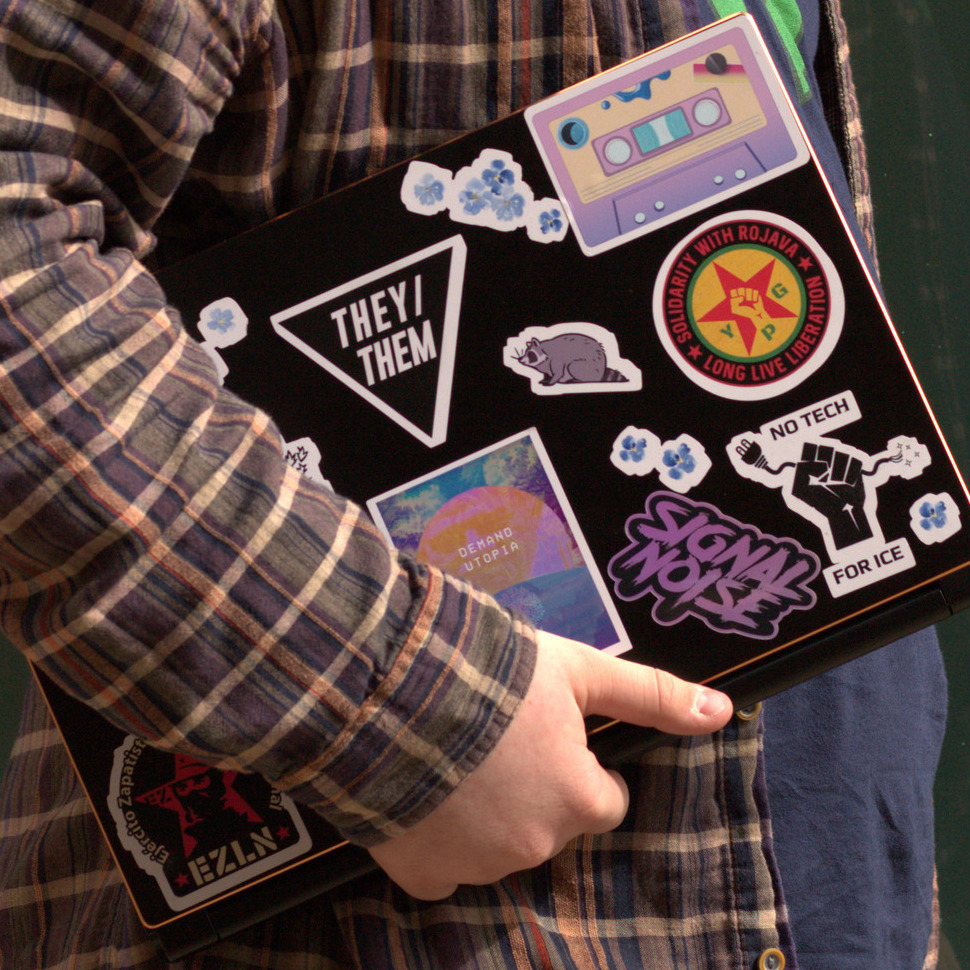

ProtoDrew
FOSS Enthusiast, Queer Activist, Ecosocialist, Nonbinary person


I have been online since as long as I can remember, and have been working here for around 5 years. I have written about video games, Podcasted, developed games, contributed to FOSS, and freelanced in web design and video editing.
I am a soon to be university student at Worcester Polytechnic Institute, where I am double majoring in Interactive Media and Game Development, and Computer Science.
After college, I wish to utilize my skills to help make the internet more efficient, accessible, and functional. I love every aspect of the internet from the massive social network mastodon down to the tiniest library that helps render a certain kind of shape.
I believe in an open internet, open borders, sustainable technology, and an egalitarian society. This greatly informs the projects I take on, and the popular tech mantra of move fast and break things is lost on me.
I geniunely believe in technology's ability to make the world a better place, but it cannot be our only solution. If we must halt progress in order to accomplish this, we must prioritize the well being of every person rather than prioritizing growth and production for its own sake.
 Music Production
Music Production
 Scoping Projects
Scoping Projects
I write well researched opinion pieces and essays about topics ranging from political science, urbanism, social ecology, as well as personal blog-style work. Each of my pieces takes around 1 month to research so there is quite a bit of time between essays. I am currently working on an essay analyzing the failures of silicon valley when it comes to addressing its own toxic environment, and the negative impact that has on the world at large.
I create ambient electronic music as well as experimenting in other genres such as vaporwave, techno, and mallsoft. All of my work it put out under the Attribution-ShareAlike 3.0 license